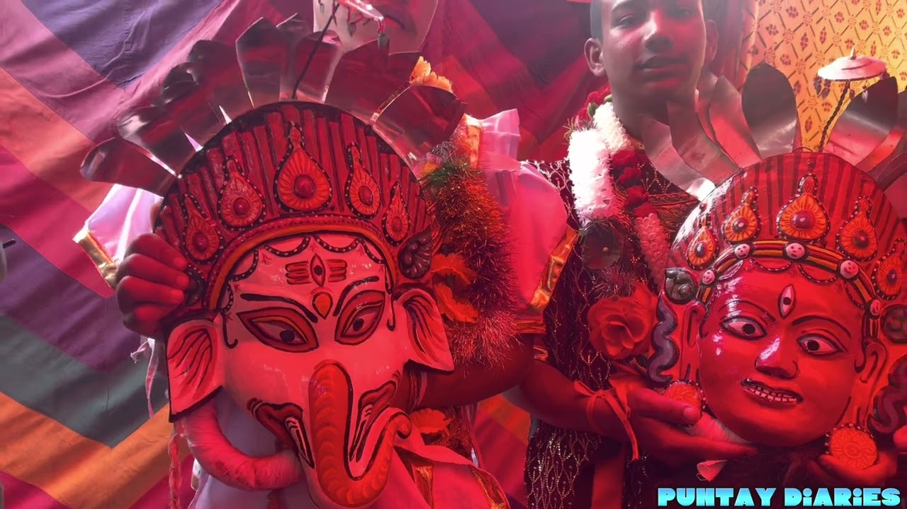

"Chitlang: A Hidden Gem of History, Culture, and Nature"
 Chitlang is a serene village located in the Makwanpur district of Nepal, nestled in the lush hills southwest of Kathmandu. Known for its rich history and natural beauty, Chitlang has been an important settlement since ancient times, with inscriptions dating back to the Licchavi era. The village was once a major trade route between Kathmandu and India, making it a historically significant location. Today, it offers visitors a peaceful escape from the bustling city, surrounded by terraced fields, dense forests, and traditional Newari architecture.The village has strong ties to the Red Machhindranath Jatra of Patan, and during this festival.
Chitlang is a serene village located in the Makwanpur district of Nepal, nestled in the lush hills southwest of Kathmandu. Known for its rich history and natural beauty, Chitlang has been an important settlement since ancient times, with inscriptions dating back to the Licchavi era. The village was once a major trade route between Kathmandu and India, making it a historically significant location. Today, it offers visitors a peaceful escape from the bustling city, surrounded by terraced fields, dense forests, and traditional Newari architecture.The village has strong ties to the Red Machhindranath Jatra of Patan, and during this festival.
Kulekhani
One of Chitlang’s most fascinating aspects is its diverse cultural heritage. The village is home to various ethnic groups, including Newars, Tamangs, and Gopalis, each contributing to its vibrant traditions. Festivals and jatras are celebrated throughout the year, reflecting influences from both Kathmandu and Patan. The presence of ancient stupas, temples, and stone inscriptions showcases the deep-rooted spiritual and historical significance of the area. Visitors can explore sites like the Ashoka Chaitya, believed to be built by Emperor Ashoka, and the historic Swachchhanda Bhairav Temple.
Oraganic village
One of the most fascinating aspects of Chitlang’s culture is its festivals and jatras, which are celebrated throughout the year. The village has strong ties to the Red Machhindranath Jatra of Patan, and during this festival, offerings are collected from Chitlang as part of the rituals. Additionally, Chitlang hosts its own Yemba Thanegu festival, which resembles a smaller version of Kathmandu’s Indra Jatra, highlighting its historical connection to the capital.oday, it offers visitors a peaceful escape from the bustling city, surrounded by terraced fields, dense forests, and traditional Newari architecture
Jatras
Chitlang is known for its rich and diverse food culture, deeply influenced by the Newari community and local organic farming. The village embraces a farm-to-table concept, where fresh ingredients are sourced directly from local farms, ensuring high-quality and flavorful dishes. One of the most famous traditional meals is Samay Baji, a Newari feast consisting of beaten rice (chiura), spiced potatoes, black-eyed peas, lentil fritters (bara), and grilled meat (chhoila). This dish is often served during festivals and special occasions, reflecting the deep-rooted culinary traditions of the region.
Famous Food